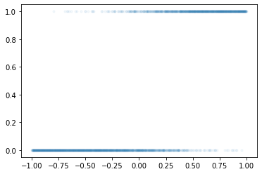

중간고사 예상문제
1. 경사하강법과 tf.GradientTape()의 사용방법 (30점)
(1) 아래는 \(X_i \overset{iid}{\sim} N(3,2^2)\) 를 생성하는 코드이다. (10점)
<tf.Tensor: shape=(10000,), dtype=float64, numpy=
array([ 4.12539849, 5.46696729, 5.27243374, ..., 2.89712332,
5.01072291, -1.13050477])>함수 \(L(\mu,\sigma)\)을 최대화하는 \((\mu,\sigma)\)를 tf.GradeintTape()를 활용하여 추정하라. (경사하강법 혹은 경사상승법을 사용하고 \(\mu\)의 초기값은 2로 \(\sigma\)의 초기값은 3으로 설정할 것)
\[L(\mu,\sigma)=\prod_{i=1}^{n}f(x_i), \quad f(x_i)=\frac{1}{\sqrt{2\pi}\sigma}e^{-\frac{1}{2}(\frac{x_i-\mu}{\sigma})^2}\]
hint: \(L(\mu,\sigma)\)를 최대화하는 \((\mu,\sigma)\)는 \(\log L(\mu,\sigma)\)를 역시 최대화한다는 사실을 이용할 것.
hint: \(\mu\)의 참값은 3, \(\sigma\)의 참값은 2이다. (따라서 \(\mu\)와 \(\sigma\)는 각각 2와 3근처로 추정되어야 한다.)
with tf.GradientTape() as tape:
pdf = 1/sigma * tnp.exp(-0.5*((x-mu)/sigma)**2)
log = tf.reduce_sum(tnp.log(pdf))
tape.gradient(log, [mu, sigma])[<tf.Tensor: shape=(), dtype=float32, numpy=1129.3353>,
<tf.Tensor: shape=(), dtype=float32, numpy=-1488.3431>](2)
(3)
2. 회귀분석의 이론적해와 tf.keras.optimizer 이용방법 (20점)
아래와 같은 선형모형을 고려하자.
\[y_i = \beta_0 + \beta_1 x_i +\epsilon_i.\]
이때 오차항은 정규분포로 가정한다. 즉 \(\epsilon_i \overset{iid}{\sim} N(0,\sigma^2)\)라고 가정한다.
관측데이터가 아래와 같을때 아래의 물음에 답하라.
x= tnp.array([20.1, 22.2, 22.7, 23.3, 24.4, 25.1, 26.2, 27.3, 28.4, 30.4])
y= tnp.array([55.4183651 , 58.19427589, 61.23082496, 62.31255873, 63.1070028 ,
63.69569103, 67.24704918, 71.43650092, 73.10130336, 77.84988286])
# X= tnp.array([[1.0, 20.1], [1.0, 22.2], [1.0, 22.7], [1.0, 23.3], [1.0, 24.4],
# [1.0, 25.1], [1.0, 26.2], [1.0, 27.3], [1.0, 28.4], [1.0, 30.4]])(1) MSE loss를 최소화 하는 \(\beta_0,\beta_1\)의 해석해를 구하라.
(2) 경사하강법과 MSE loss의 도함수를 이용하여 \(\beta_0,\beta_1\)을 추정하라.
주의 tf.GradeintTape()를 이용하지 말고 MSE loss의 해석적 도함수를 사용할 것.
(3) tf.keras.optimizers의 apply_gradients()를 이용하여 \(\beta_0,\beta_1\)을 추정하라.
(4) tf.keras.optimizers의 minimize()를 이용하여 \(\beta_0,\beta_1\)을 추정하라.
hint1 alpha=0.0015로 설정할 것
hint2 epoc은 10000번정도 반복실행하며 적당한 횟수를 찾을 것
hint3 (1)의 최적값에 반드시 정확히 수렴시킬 필요는 없음 (너무 많은 에폭이 소모됨)
hint4 초기값으로 [5,10] 정도 이용할 것
3. keras를 이용한 풀이 (30점)
(1) 아래와 같은 모형을 고려하자.
\[y_i= \beta_0 + \sum_{k=1}^{5} \beta_k \cos(k t_i)+\epsilon_i, \quad i=0,1,\dots, 999\]
여기에서 \(t_i=\frac{2\pi i}{1000}\) 이다. 그리고 \(\epsilon_i \sim i.i.d~ N(0,\sigma^2)\), 즉 서로 독립인 표준정규분포에서 추출된 샘플이다. 위의 모형에서 아래와 같은 데이터를 관측했다고 가정하자.
np.random.seed(43052)
t= np.array(range(1000))* np.pi/1000
y = -2+ 3*np.cos(t) + 1*np.cos(2*t) + 0.5*np.cos(5*t) + np.random.randn(1000)*0.2
plt.plot(t,y,'.',alpha=0.2)
tf.keras를 이용하여 \(\beta_0,\dots,\beta_5\)를 추정하라. (\(\beta_0,\dots,\beta_5\)의 참값은 각각 -2,3,1,0,0,0.5 이다)
(2) 아래와 같은 모형을 고려하자.
\[y_i \sim Ber(\pi_i), ~ \text{where} ~ \pi_i=\frac{\exp(w_0+w_1x_i)}{1+\exp(w_0+w_1x_i)}\]
위의 모형에서 관측한 데이터는 아래와 같다.
tf.random.set_seed(43052)
x = tnp.linspace(-1,1,2000)
y = tf.constant(np.random.binomial(1, tf.nn.sigmoid(-1+5*x)),dtype=tf.float64)
plt.plot(x,y,'.',alpha=0.05)
tf.keras를 이용하여 \(w_0,w_1\)을 추정하라. (참고: \(w_0, w_1\)에 대한 참값은 -1과 5이다.)
4. Piecewise-linear regression (15점)
5. 다음을 잘 읽고 참과 거짓을 판단하라. (5점)
(1) 적절한 학습률이 선택된다면, 경사하강법은 손실함수가 convex일때 언제 전역최소해를 찾을 수 있다.
(2)
(3)
(4)
(5)
some notes
- 용어를 모르겠는 분은 질문하시기 바랍니다.
- 풀다가 에러나는 코드 질문하면 에러 수정해드립니다.